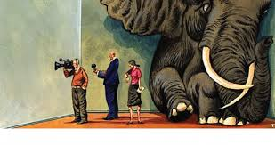

They tell you inequality is inherent in capitalism. However, this “inequality” has become extreme or excessive since the Golden Age Of Capitalism which ended with the 1973-1975 recession. Poverty has become absolute instead of relative. And we have free-market economists to blame for that. Every economy requires some state intervention- and those who say otherwise (that any degree of state intervention is detrimental) are either rich and ignorant- or just ignorant.

Capitalism is the sustainable and profitable system- yes, but only when regulated. While the
world struggles with the global pandemic, which fortifies itself in tens of thousands of
households by the day, the implications are not only medical or health-related, but very much
economic. Absolute poverty has mobilized its effects in the recent month. A study in May noted
that people in the poorest wealth quintile are 32% more likely to die from the coronavirus than
the wealthiest- owing to three primary factors. Occupation, access to clean water, and the
critical ability to seek healthcare. A solution (obviously this is just a mild remark, we don’t
really have a fully formulated solution to tackle poverty) to this might be a very commonly
discussed and criticized policy- Universal Basic Income. Now, this policy is not like other
subsidies/programs introduced by the government. In fact, that’s what makes it preferable. The
Universal Basic Income is in the simplest terms- some money for everyone. It is a policy which
allocates a minimum income to every citizen of the country- despite her being rich or poor,
retired or employed, active or lazy, clean or addicted. Yes, you may have started realizing the
problem with it by now.
You can’t give money to everyone without taking into consideration how they contribute to
society, whether they consume commodities which may or may not pose threat to the well-
being of themselves and others, or them already being rich or maybe even exploitative of the
poor, now, can you? However, it’s not enough to form an opinion on the disputed topic. Despite
the doubts we might have because of the very simplicity of the policy (ironic), the utility of the
charitable policy is indisputable. It would help people buy basic goods which they may not be
able to sustain their lives without, have access to clean water and healthcare, and most
importantly- it would increase employment and start diminishing the urgent need of the policy
altogether. There’s a Penguin article on UBI which puts the need of it very beautifully into a
concise array of words- “In the game Monopoly, everyone starts off with a little bit of money –
without it, the game wouldn’t work and no one would be able to become rich or successful. UBI
is like Monopoly – everyone starts off with a little bit of money, and uses it to fuel a thriving
economy.”
UBI would raise employment in the sense that people need money to get jobs. Without a small
sum of money to serve their basic needs, they would not be able to acquire human capital
(which is the ultimate factor equating to employment), purchase a suit for your interview, or
well- be hygienic enough to not be kicked out of the office. However, there is a VERY common
argument against UBI on the basis of employment. The argument goes like this- “If everyone
receives a certain amount of money with which they can buy basic goods and services, they will
lose the motive/incentive to work and earn money in a competitive market.” However, there is
absolutely no data guaranteeing or even backing this argument. Rs 7,620 (an estimate of what
UBI in India would be) will not exactly instill overconfidence in the minds of people and
demotivate them to work. However, now another disadvantage springs up- the HUGE amount
of money the government will have to spend. HUGE. It will add trillions to the budget deficit.
In 2012, there were 179 million working-age adults in the USA. Implementing the UBI would
cost 2.14 trillion dollars. However, it’s not as horrible as you might take it to be. The reason
being, the UBI would eliminate the need for subsidies, freebies, and expensive, complicated
policies that governments implement in the name of social security and to promote their
reelection to office after their term ends. We all know how many policies the Govt. Of India has
going, and UBI would simply precipitate these policies, the money spend behind the
paperwork, inspection and verification considering the complication involved in these policies.
Therefore, in the US- it would eliminate 1 trillion dollars of costs on welfare policies, but would
still add a trillion dollar deficit. So yes, there’s an indisputable heavy cost in implementing UBI.
The government deficit may lead to creeping inflation. It doesn’t end there. Giving a basic
income to everyone would accelerate everyone’s income, hence- accelerate demand in the
economy- leading to further inflation.
So inflation is a major cause of worry. However, inflation is not necessarily detrimental to
economic growth- too much of it is. In fact, right now, we do need an increase in income, an
increase in demand, therefore- an increase in profits. Despite the flaws, the UBI has a
consolidated advantage for the basic greater good of the economy- it would let the people live.
And have those basic utilities which everyone deserves. It would help in diminishing poverty,
increasing income, establishing a basic standard of living for many who suffer from
unemployment, disease and hunger. It does have ethicality in the conceptual sense of it. Yes,
maybe it might cause deficits and inflation, but the government CAN, WILL AND SHOULD
control it later. It all comes down to one question- is UBI worth trying just this instance, amidst
this horrible, horrible pandemic to let the world population have a basic standard of living
which they are deprived of- considering that negative implications could be controlled later on
and the UBI’s implementation would diminish the very need for it in the long run? The definite
answer to this is - We all forget about basic human needs when it comes to complex public
policy, but we can’t afford to today so-
Yes, it is worth trying.